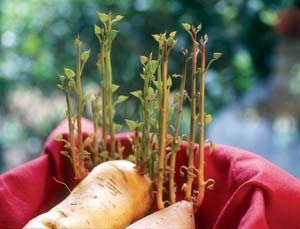
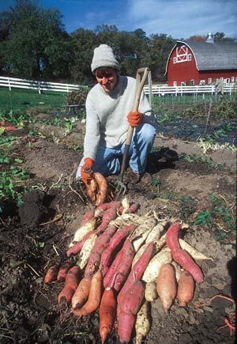
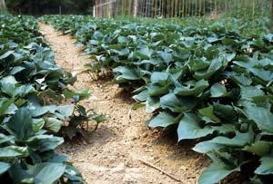

Sweet potatoes are productive and easy to grow, have few pests, tolerate drought, and a good harvest can last all winter - plus, they’re fun! The vines’ growth rate is fast and furious, and the reason for such luxuriance becomes clear in autumn when the roots are dug. All that photosynthesizing foliage fattens a fine crop of roots.
Short season varieties have extended the sweet potato’s growing range significantly northward, even into Canada. “Word is getting out...garden centers are now stocking plants regularly, while market growers and community supported agriculture (CSA) participants tell me sweets have become established as customer favorites,” says Greg Wingate, owner of Mapple Farm in Weldon, New Brunswick, Canada, a certified organic supplier of sweet potato plants. “This was unheard of two decades ago!”
Sweet potatoes have a lot to offer nutritionally: They’re loaded with vitamin A and beta carotene, plus healthy amounts of vitamins C, B6 and E, as well as potassium. They are also a good source of fiber and complex carbohydrates. Like most vegetables, they contain no fat or cholesterol, and a medium-size sweet potato has only about 100 calories.
In the kitchen, sweet potatoes assume varied roles as appetizers, soups, side dishes and desserts with equal panache (see “Candied Sweet Potatoes” below). Bake them in their skin, or try them sliced, seasoned with olive oil and herbs, then grilled for just a few minutes per side. You can even eat sweet potato leaves like spinach. Ken Pecota, a sweet potato researcher at North Carolina State University, says people usually cook the greens, using 6 to 10 inches of the tips of vines, when they are relatively tender.
Sweet potato varieties differ in skin color (yellow, orange, red, purple or cream); flesh color (white, yellow, reddish or orange); texture (soft and moist, or dry and firm); shape (blocky to tapered); and flavor (mild to very sweet). The moist, orange-fleshed types are most popular in the United States, although other types are being grown in increasing quantities to satisfy ethnic food markets.
“The Asian markets prefer a purple-skinned, cream-fleshed, smooth-textured, somewhat dry type that is very sweet when baked,” Pecota says. Hispanic markets tend to favor dry, white-fleshed types that are not sweet.
Heirloom varieties also are finding their way to farmers markets and specialty stores. Mike Cox of White Oak Point Farm in Prince Frederick, Md., who grows about an acre of sweet potatoes for local sale, prefers the white-fleshed ‘O’ Henry.’ To introduce his customers to the super sweet, sometimes cantaloupe-sized roots, he tosses one in with their purchase of orange sweet potatoes. “Once they try them, I can’t seem to grow enough,” he says.
Some varieties, such as ‘Centennial,’ produce vines that seem determined to take over the garden. Others, such as ‘Vardaman,’ have a more compact, bushy growth habit. Some require a long growing season - up to 150 days - while short-season varieties best suited for northern gardens mature in 90 to 100 days.
“Choose a planting stock with a pedigree for performance in your area,” says Wingate, who cites ‘Georgia Jet’ and ‘Tainung 65’ as a couple of his favorite short-season varieties well suited to a Canadian garden. “They size up very quickly and tolerate cooler conditions better than most.” (See “Outstanding Sweets” below for more recommended varieties.)
Unlike Irish white potatoes, which are started by cutting the potato into pieces of “seed,” sweet potatoes are started from “slips,” young shoots that grow from the stem end of the root (see “How to Start Sweet Potato Slips” below). You can buy slips in bundles of a dozen or so from local garden or farm supply stores, or through the mail. Keep them moist and wait to plant them until the soil temperature is consistently above 70 degrees. Sweet potatoes love heat. Irish potatoes are normally planted on or near St. Patrick’s Day when the ground has barely thawed, but sweet potatoes flounder in soil that is even slightly chilly.
Sweet potatoes need lots of room and lots of sun - they produce the best roots in a light, sandy, slightly acidic soil. They will grow in heavier soil, but the roots may be knobby. Work the soil to a depth of at least 8 inches, incorporating well-rotted compost or other organic matter.
“Easy on the fertilizer,” says Don LaBonte, a professor of breeding and genetics at Louisiana State University. “They are a bit like tomatoes, the more fertilizer the more foliage, but the less root mass.”
Space the rows at least 3 to 5 feet apart. To encourage good drainage, which is especially important with heavier clay soils, hill the center of each row about 8 inches high. Set your slips 12 to 15 inches apart in the row, burying them so that only the top leaves are above the soil. Water them well for the first week or two until they start to take off, after which the plants will be fairly drought tolerant.
Remove weeds when the plants are young. Once the vines cover the ground, they provide their own living mulch. The sweet potatoes begin to form 30 to 45 days after planting and continue to develop until cold weather slows their growth in the fall.
As temperatures drop in the fall, it’s time to harvest the potatoes. Conveniently, the vines will wither, reminding you it’s harvest time. Although roots are generally unhurt by a light frost, a hard frost may injure roots near the surface. Cool soil temperatures also can promote decay.
In loose soil, sweet potatoes can grow pretty deep. The roots bruise easily, so use a fork to lift them carefully. Sort and separate damaged roots, eat them first, and save the better ones for storage. LaBonte says sweet potatoes prepared right after harvest, or “green” potatoes, have a starchy taste, while those given time to cure become sweeter as they gradually convert starch to sugar.
Cure undamaged roots by keeping them in a warm place - ideally 80 to 90 degrees with high humidity - for five to six days, or longer if you’re using a cooler storage spot. “This begins the curing process in which sugars begin to accumulate,” LaBonte says. After initial curing, store them in a dark place where temperatures stay between 50 and 60 degrees.
If your yield is good, you can enjoy fresh, delicious sweet potatoes right up to your next harvest.
If you grow your own slips, make sure to select roots that are healthy, robust and haven’t been treated or waxed, which may prevent sprouting. Then, six to eight weeks before planting time, bury the sweet potato halfway in moist sand or soil, or use toothpicks to suspend it in a jar of water. You may also be able to sprout slips simply by placing a potato in a warm sunny window (see Image Gallery).
Usually about a month later, the first shoots will appear. Once they are 6 to 8 inches long, cut the slips from the parent potato. Your slips are now ready to be planted in moist ground, where they will put roots down quickly. During the first couple of weeks, water them frequently - after that time, the plants are able to tolerate drier conditions. Cover the slips with a flowerpot or a handful of mulch for about three days after the initial planting to help them root faster and also shield them from drying winds.
You can expect to produce 10 to 20 slips from a single starter potato. In the South, where the growing season is long, a second planting can even be made from cuttings taken from the first.
3 large sweet potatoes (about 2 pounds)
3tbsp salted butter
3 tbsp dark brown sugar
1 tbsp dark corn syrup
Wash the sweet potatoes and cut them in half lengthwise. Bring a large kettle of water to a boil, add the sweet potatoes, and cover. Boil for about 20 minutes, or until just tender. Keep an eye on them, as they usually get tender at an uneven rate. Drain the cooked sweet potatoes, let them cool slightly, then peel them.
In a large heavy or nonstick frying pan, melt the butter over low heat. Add the brown sugar, then drizzle the corn syrup over the melted butter and brown sugar; stir together.
Place the potatoes flat-side down in the pan over the butter mixture. Cook over medium to low heat for about 10 minutes, or until golden brown. Turn them over and cook for another 5 to 10 minutes until both sides are golden. At this point, turn the pieces occasionally and watch carefully to prevent them from burning. Transfer them to a warm plate and serve immediately. Serves 4.
- Rosalind Creasy
There are a number of outstanding sweet potato varieties that differ in skin color, flesh color, growth habit and days to maturity, in addition to flavor. “Sweet potato flavor is affected by a number of factors: curing, time and temperature in storage, cooking method, and cultivar - in that order,” says Ken Allan, author of Sweet Potatoes for the Home Garden (Green Spade Books, 1998).
The following varieties are some of the best, per the experts we surveyed. The average number of days required to develop a crop is provided for each, though these can vary based on your climate and how far apart the potatoes are planted. By selecting varieties that produce a crop in 90 to 100 days, even northern gardeners can enjoy homegrown sweets. The numbers after each description refer to suppliers listed below.
Mapple Farm
Weldon, New Brunswick, Canada
Sand Hill Preservation Center
Calamus, Iowa
(563) 246-2299
Scott Farms
Lucama, N.C.
(877) 284-4030
Steele Plant Co.
Gleason, Tenn.
(731) 648-5476
W. Atlee Burpee & Co.
Warminster, Pa.
(800) 888-1447
|
DAVID CAVAGNARO Sweet potatoes come in a wide range of colors and sizes. |
 BARBARA PLEASANT Sweet potato slips can be started by placing a potato in a warm, sunny window. |
 DAVID CAVAGNARO Use a fork to harvest sweet potatoes and avoid damaging the easily bruised roots. |
|
 BARBARA PLEASANT Sweet potatoes require lots of room in the garden, as well as lots of sun. Space the rows at least 3 to 5 feet apart. |
ROSALIND CREASY Candied sweet potatoes are best served warm. |
|